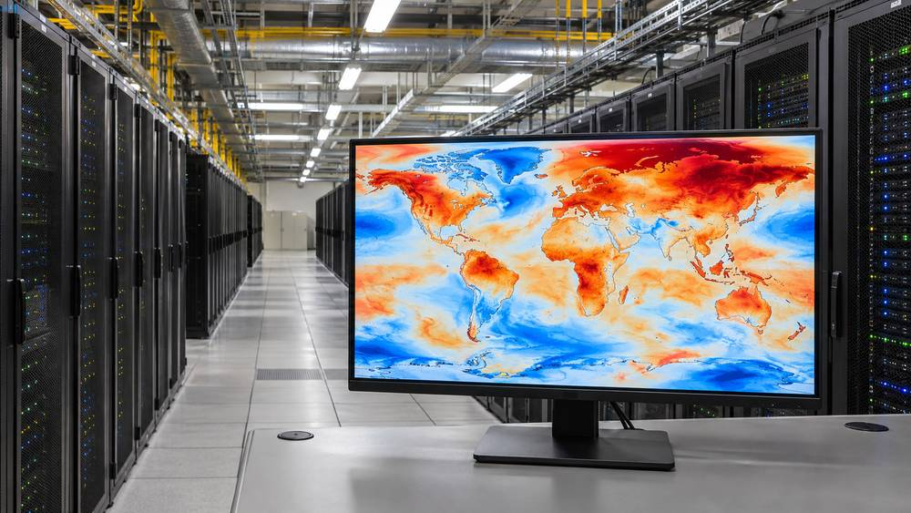

기후변화 시나리오 첫 산출, 세기 말 1.2~3.6℃ 상승

기상청이 IPCC 7차 보고서용 전지구 시나리오 2종을 냈다. 동아시아는 고배출 때 최대 4.1℃ 오르고, 한반도 표준 시나리오는 2030년에 나온다.
기상청이 기후변화에 관한 정부 간 협의체(IPCC) 7차 보고서에 쓸 전지구 기후변화 시나리오 2종을 11월 20일 처음 내놨다. 고배출 경로에서는 2081~2100년 지구 평균기온이 현재(2002~2021년)보다 3.6℃ 오르고 강수량은 7.4% 늘어난다. 2100년에 온난화를 1.5℃ 수준으로 안정시키는 매우 낮은 배출 경로에서는 같은 기간 기온이 1.2℃ 오르고 강수량은 3.9% 늘어난다.
새 배출 경로 7종은 파리협정 이후 정책과 실제 에너지 전환 속도를 반영해, 고배출 경로도 6차 최악 경로(SSP5-8.5)보다 배출이 적다. 7종 가운데 중간 경로는 2025년 기준 현재 정책 수준으로 배출이 이어져 완만한 온난화가 계속되는 경우를 가정한다. 6차 대응 전망(2020년 7월)에서 SSP5-8.5는 21세기 후반 5.2℃ 상승이었으나 기준기간(1995~2014년)이 달라 견주기 어렵다.
이번 산출에는 대기·해양·해빙·지면에 육상과 해양의 탄소순환까지 계산하는 지구시스템모델 'K-에이스(ACE)2'가 쓰였다. 탄소 배출과 흡수를 직접 계산하는 배출량 기반 방식에서는 고배출 경로 기온 상승이 3.8℃, 강수 증가가 7.7%로 농도 기반보다 조금 높았다. 동아시아(북위 10~55도, 동경 80~150도)는 고배출 경로에서 농도 기반 3.8℃, 배출량 기반 4.1℃ 올라 지구 평균보다 높았다. 결과는 모델의 초기 상태를 달리해 6차례 모의한 값을 종합한 것이다.
기상청은 나머지 5종을 더 산출해 제7차 국제 기후모델 비교 프로젝트(CMIP7) 자료센터에 내고 전 세계 연구자와 공유할 계획이다. 이번 결과는 여러 시나리오를 하나로 묶어 정책 혼선을 막는 '국가 기후변화 표준 시나리오'에도 쓰인다. 표준 시나리오 가운데 한반도 영역은 지역별 적응대책과 지속가능경영(ESG) 공시에 가장 많이 쓰인다. 표준 시나리오는 2028년 전지구, 2029년 동아시아, 2030년 한반도 영역 순으로 나온다.
시민에너지 관점
최악 경로가 빠졌다고 안심할 일은 아니다. 고배출 경로에서도 세기 말 지구 기온은 3.6℃, 동아시아는 최대 4.1℃ 오른다. 1.2℃와 3.6℃를 가르는 것은 지금부터의 배출이고, 그 배출을 가장 빨리 줄이는 길은 마을과 협동조합이 지붕과 유휴부지에 직접 세우는 재생에너지다. 2030년 한반도 시나리오가 나오기 전에 지역 적응계획과 주민 소유 발전 목표를 함께 세우자.
출처: 기상청 2026-11-20 보도자료 「기상청, 기후변화에 관한 정부 간 협의체(IPCC) 7차 전지구 기후변화시나리오 첫 산출」·붙임 1~3(국립기상과학원 기후변화예측연구팀) 원문 보기